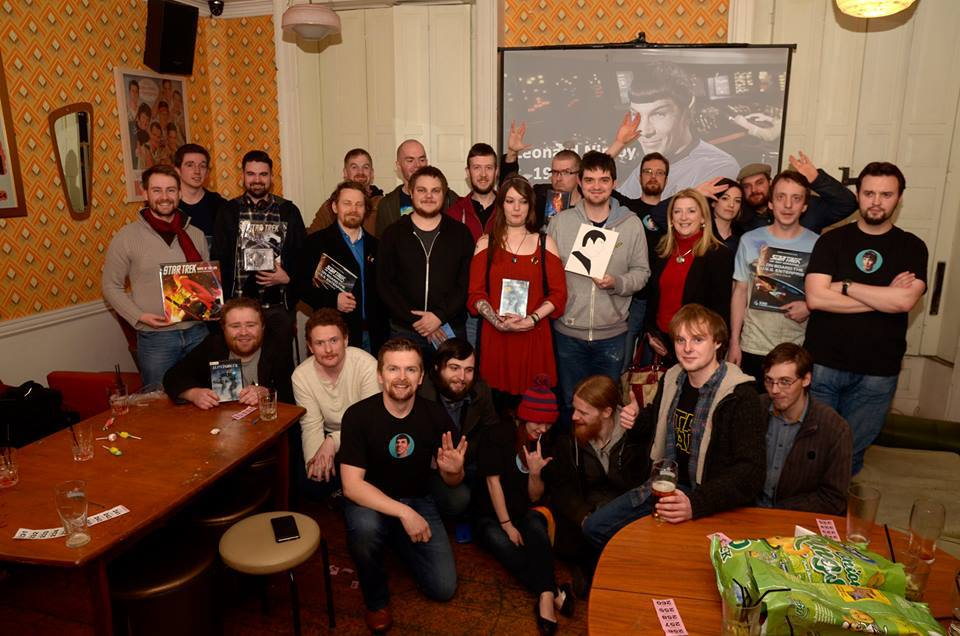
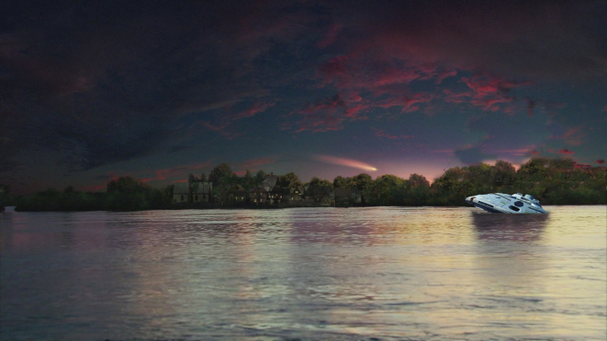
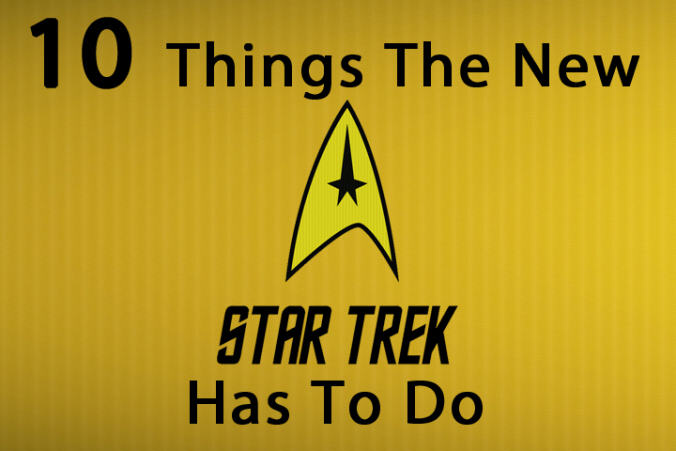

Rediscovering Star Trek Enterprise

Did you watch Star Trek Enterprise when it first appeared on TV 15 years ago?
2016 – A Year in Review
Here's a breif review of some of our favourite moments from throughout 2016.
Garak
Andrew Robinson plays Garak in ‘Tinker Tailor Soldier Spy’, part of the Deep Space Nine TV series coming to Blu-ray someday we hope!
While we wait for that there is a brand new DS9 documentary coming out soon. You can follow them on twitter at .....

Watching Star Trek with The Next Generation!
While giving my wife a lie on Saturday mornings, one of the things I’ve loved doing for the last couple of years with my now 7 year old daughter is watching my favourite TV show Star Trek The Next Generation. Some people may say Star Trek is not for children, and there are some unsuitable episodes/moments, but I would argue there are many life lessons to be learned through the medium of Star Trek, while opening their minds to science.
I think The Next Generation is the best series to introduce your kids to the Star Trek Universe.
Odo – A Life in Pitchers
I managed to catch up with one of my favourite stars recently, Odo. When he suggested we meet in St. Stephen’s Green park in the heart of Dublin, I was so honoured. Much is known about his time on Deep Space Nine, but what is not generally known is his love affair with Earth, and in particular acting.
Star Trek 2017 Series Rumours
As we all wait patiently for news on Star Trek 2017 all we can do is speculate. We now know who the main writers are going to be. We welcome Star Trek alumni Bryan Fuller as a show runner and Nicholas Meyer from the Star Trek films to the writers room. So far though we’ve been given only rumours and hints at what this new series will be, when and where it will be set.
THE IRISH IN SPACE

You may not know how important Ireland is to Star Trek. Well we’re here to fix that.
Rick Sternbach’s Top 10 Sizzlers
To celebrate Rick Sternbach’s birthday (july 6th) I thought I’d run through my favourite

Star Trek designs designed by Rick.

Salem Voyage
Captain’s Log Supplemental. We’re low on coffee. Sensors show large amounts on a class M type planet. In my eagerness to get here I’ve crashed Voyager into a lake close to our sensor readings.....
Salem Voyage
Captain’s Log Supplemental. We’re low on coffee. Sensors show large amounts on a class M type planet. In my eagerness to get here I’ve crashed Voyager into a lake close to our sensor readings.....
10 Things The New Star Trek 2017 Series Has To do
I don’t think it is really that important who is behind the show, so long as they stick to these 10 very important things.
Guide To Star Trek
Hugh from our Friends over at Geek Ireland has been telling the public about Star Trek.

© 2018, Yoki & Co., C&D LTD